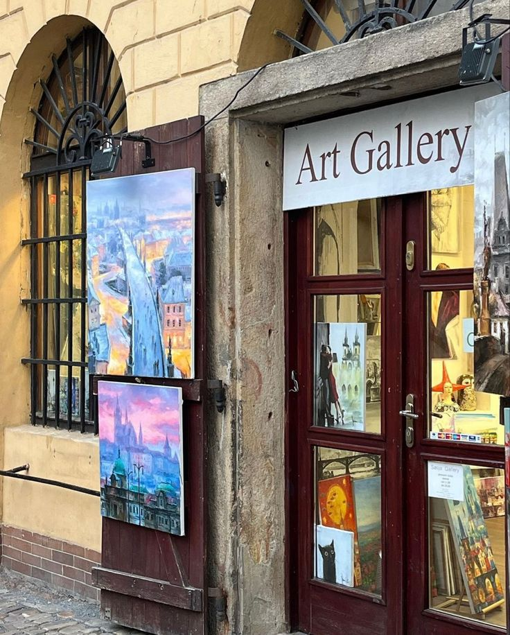

About me
Hi, I'm Amy Sillman. I'm an artist known for my vibrant, abstract paintings that often play with form, color, and space. My work tends to explore the dynamics between abstraction and representation, blending elements of both to create something uniquely expressive. I've been fortunate to exhibit my work in various galleries and museums, and I also teach art, sharing my passion for creativity and exploration with others. My artistic practice is deeply influenced by my interest in psychology and the human experience, which I weave into the visual language of my work.

My artworks
My artwork often blends abstract forms with figurative elements, creating a dynamic interplay between representation and abstraction. I use bold colors and fluid lines to explore themes of identity, emotion, and perception. My paintings are known for their energetic compositions and a kind of playful unpredictability. I’m interested in how shapes and colors can convey psychological and emotional states, inviting viewers to engage with the work on a personal level.
Exhibitions
I've had the pleasure of exhibiting my work in various renowned galleries and museums, both nationally and internationally. These exhibitions showcase the range and evolution of my practice, often highlighting new series and explorations. Each exhibition is an opportunity to present my latest work and engage with different audiences, offering insights into my artistic process and the themes I’m exploring. The feedback and dialogue that come from these shows are invaluable, helping me to continually refine and expand my approach.
I've had the pleasure of exhibiting my work in various renowned galleries and museums, both nationally and internationally. These exhibitions showcase the range and evolution of my practice, often highlighting new series and explorations. Each exhibition is an opportunity to present my latest work and engage with different audiences, offering insights into my artistic process and the themes I’m exploring. The feedback and dialogue that come from these shows are invaluable, helping me to continually refine and expand my approach.